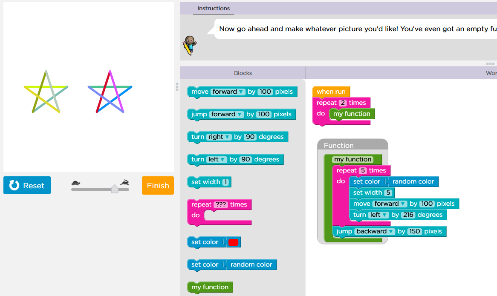
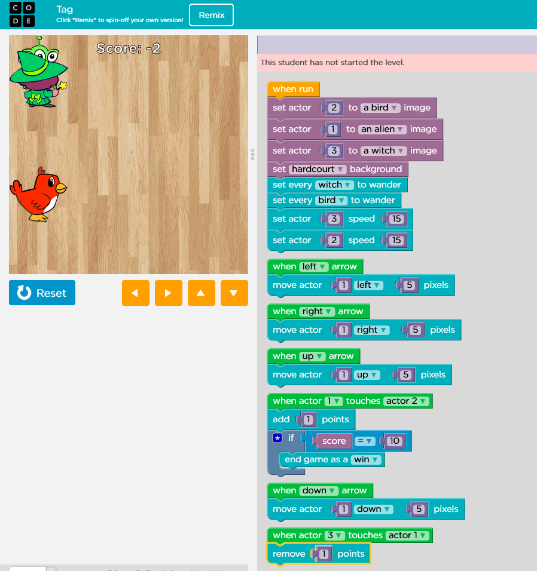
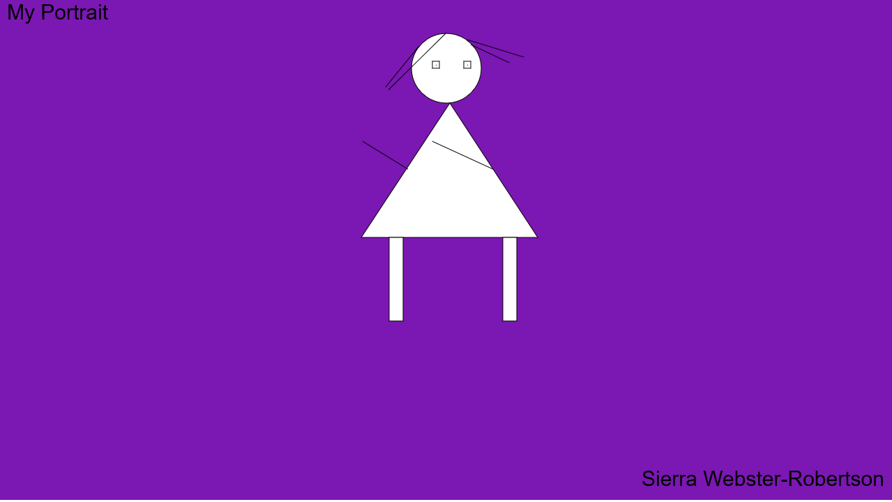
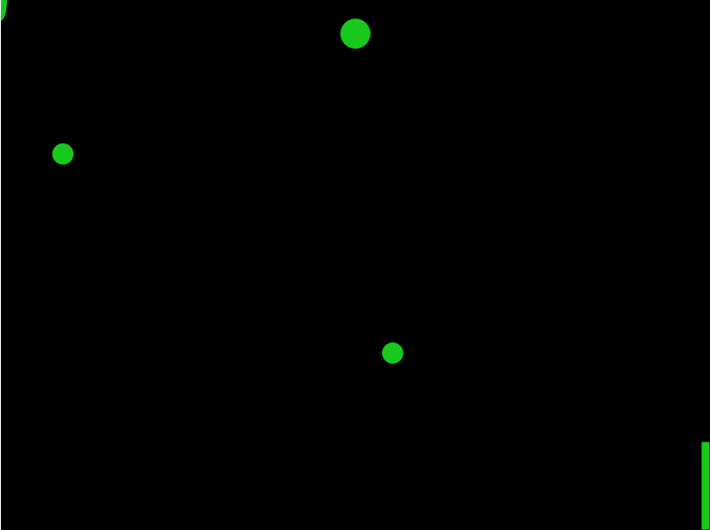
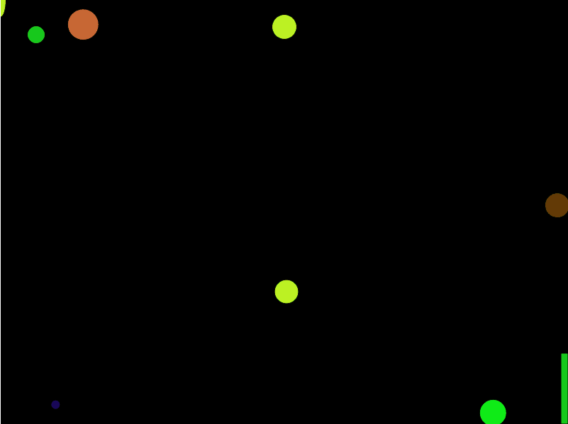

Home | Story | Contact Us! | Math Game!
My Portfolio!
Week 2

In week two, we did the Artist Lab. I made 2 stars with my code.
Week 3
 In week 3, We made a game in scratch. I made a pong style game where it was impossible to win.
In week 3, We made a game in scratch. I made a pong style game where it was impossible to win.
Week 4

In week 4, we made a game and app for a "phone". I made an animal app where the sound is made when you click on the
image
Week 5
In week 5, we made a game with a program called Alice. We had to have movement and some sprites to interact with.
Week 6 - Week 8
In these weeks, We made our websites. starting out with out homepage and building on that foundation.
We then added stylesheets to that to further
increase our customization for our website.
In week 8, we added a math game to show whether you were wrong or right
and kept score to 10 points. You
can see the website by clicking the various links.
Week 9 and 10

In this week, we made a self portrait using p5.js and calling it from an html file.
This was just simple shapes on the x and y. In week 10, we made our shapes move around and bounce accross the screen.
We even made them grow in size and such to show what we can do in p5.js.
Weeks 11, 12, and 13

Im this week, we made a game with moving pieces and added mouse clicks and keyboard interaction.
It even has an exit to show you finished the game. I have included a GIF of the work!
In week 12, we simply refined it and turned everything to functions in the draw instead of lines of code in the draw.
Doing this made it easier to determine if there was anything wrong, what exactly would it be.
In week 13, We made it crazier by adding colors and more objects to avoid and moving at different speeds.
